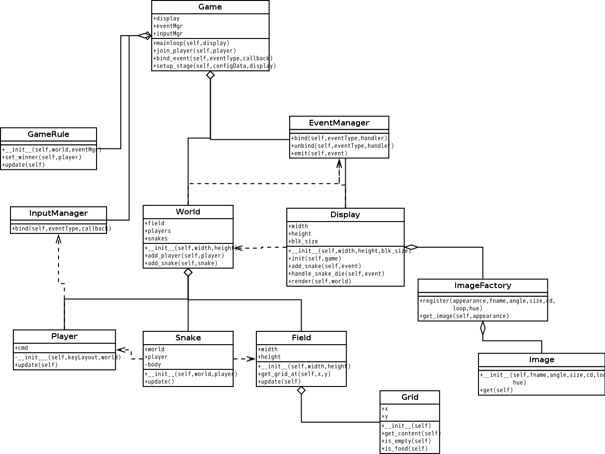

小组成员： 李冠贤 10389043 区展明 10389003 梁展瑞 10389084 杨帆 10389048
报告内容：［Part 1］团队成员工作总结。每个人的学号、姓名、个人贡献列表。
［Part 2］Task 2 程序的类图
［Part 3］回答 Task 3 任务的问题（1－4）
阅读"Learn cocos2D Game Development with iOS 5"第三章"Essentials"，［Discuss2－UML and Technical Resource］回答以下问题（1－4）：
1）阅读P41，画一个UML类图表示 CCNode 与 CCSence、CCLayer、CCSprite概念之间的关系。文献中那句话给了你启发？
2）阅读P42-43，根据图3-3，用一个UML类图表示CCSence、CCLayer、CCSprite之间的关系。
提示：Composite design pattern（组合模式）是最关键的词，如果你了解一点软件设计模式（Software design pattern），你将更容易领会作者的意图，如层次的含义与实现。
3）
阅读P5－47, 一个对象（myCCSprite），如僵尸在被子弹击中后，程序执行了 myCCSprite.runActtion(myCCBlink)语句，你认为这个僵尸将产生什么样的显示效果？用UML类图描述 CCNode 与 CCAction 之间的关系。（中级话题：显然，这时个典型的设计技术，它属于哪种设计模式？）
4）
阅读P51－56, 请问游戏系统框架中，谁（哪个对象）在管理 CCScence 的实例对象（或者说，游戏中每个场景的切换，调度是谁管理的）？解释" The CCDirector class is a singleton（单实例模式）" (P51)的含义，并写出获取 CCDirector 类的对象实例的方法。
［Part 4］游戏 Domain Model & Design Class Diagram
［part 5］回答以下问题：
1）复习教材 Chapter 1.6 "What is the UML"，结合你在实践中的经验，用自己的语言说明UML在项目中的作用。
2）根据你的观察，领域模型和设计类图都是类图，总结它们之间的区别。（参考：Class Diagram ）
3）面向对象的应用程序开发API，通常架构以框架（Framework）形式提供（如cocos2d游戏框架），请述说 Framework(Archecture) 与 Function Library （程序库）之间的区别。
4）请根据项目经验，总结导致需求、设计发生变化的原因，什么阶段会产生这些变化。
［Part 6］你对这个案例的想法和建议。
［附件］可运行程序的源代码。
团队成员工作总结
李冠贤：
区展明：
梁展瑞：
杨帆：
| 姓名 | 学号 | 个人贡献列表 | 个人贡献百分比 |
|---|---|---|---|
| 李冠贤 | 10389043 | . | . |
| 区展明 | 10389003 | . | . |
| 梁展瑞 | 10389084 | . | . |
| 杨帆 | 10389048 | . | . |
答：
domain_model
design_class_diagram
答：
想法和建议: